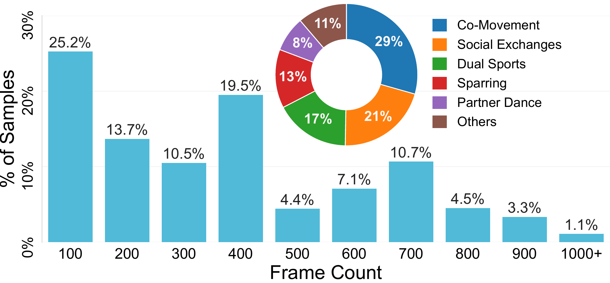
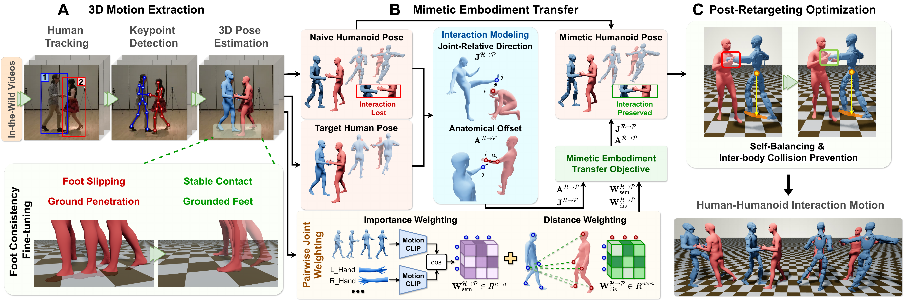

Overview
Given an in-the-wild human-human interaction video, HumiTransfer replaces one participant with a humanoid while preserving the interaction semantics and dynamics of the original human behavior.
Abstract
Abstract
Enabling a humanoid to interact naturally with human partners requires preserving not only individual motions but also the spatial, semantic, and contact relationships underlying the interaction (i.e., hugging, dancing, hand-shaking, etc.). Furthermore, a practical solution should generalize across various humanoid embodiments with distinct morphologies and kinematic constraints. To tackle this challenge, we propose HumiTransfer, a mimetic embodiment transfer framework that converts in-the-wild human-human interaction videos into physically plausible human-humanoid interactions. HumiTransfer first reconstructs 3D human motion with consistent foot-ground contact, then transfers one participant to a target humanoid embodiment via interaction modeling, using weighted joint-relative directions and anatomical offsets to prioritize interaction-critical inter-body relationships, while post-retargeting optimization enforces balance, contact, and collision avoidance. Subsequently, we apply HumiTransfer to 1,200 in-the-wild videos, producing approximately 500,000 frames of diverse interactions for the 26-DoF Unitree R1 Edu and the 23-DoF HighTorque Mini-hi humanoid robot, resulting in our HumiMimic dataset. Across both robots, HumiTransfer achieves superior motion fidelity, preserves inter-body relationships, and maintains contact accuracy compared with existing baselines. Moreover, we demonstrate that HumiMimic supports motion generation methods for synthesizing interactive humanoid motions following a human partner. Finally, our real robot deployments confirm the physical executability of the transferred motions in real-world settings.
HumiMimic Dataset
HumiMimic Dataset
HumiMimic contains 1,200 human-humanoid interaction videos, yielding about 500,000 processed frames (approximately 4.6 video hours). The dataset covers co-movement, social exchanges, dual sports, sparring, partner dance, and other interactions.
Dataset Statistics

Diversity of Retargeted Human-Humanoid Motion
Unitree R1 Edu
HighTorque Mini-hi
HumiTransfer
HumiTransfer: Mimetic Embodiment Transfer
HumiTransfer performs interaction-preserving human-to-humanoid motion retargeting followed by post-retargeting optimization.

HumiTransfer follows three stages. First, it tracks the human participants, detects body keypoints, reconstructs mesh-based full-body motion, and refines foot-ground contact. It then initializes one participant on the target humanoid through constrained inverse kinematics and preserves the interaction using weighted joint-relative directions and anatomical offsets. Finally, the retargeted motion is refined to maintain balance, preserve intended contact, and suppress unintended inter-body collisions.
Quantitative results
Retargeting Performance on Different Humanoids
MPJPE and IRD are reported in centimeters; CF1 measures contact preservation at a distance threshold of 20 cm.
| Method | Unitree R1 Edu | HighTorque Mini-hi | ||||
|---|---|---|---|---|---|---|
| MPJPE ↓ | IRD ↓ | CF1 ↑ | MPJPE ↓ | IRD ↓ | CF1 ↑ | |
| Naive IK | 37.85 | 16.82 | 13.84 | 41.31 | 20.67 | 11.42 |
| GMR | 11.91 | 5.73 | 69.12 | 10.49 | 5.30 | 61.97 |
| PAIR | 9.37 | 4.16 | 74.54 | 12.79 | 6.24 | 59.41 |
| HumiTransfer− | 10.13 | 4.08 | 80.90 | 11.63 | 6.14 | 65.29 |
| HumiTransfer+ | 6.31 | 2.84 | 81.97 | 7.58 | 3.67 | 78.15 |
Naive IK applies inverse-kinematics retargeting with uniform scaling.
GMR is an optimization-based fitting method used as a motion-retargeting baseline.
PAIR is an optimization-based fitting method evaluated on the same interaction sequences.
HumiTransfer− / HumiTransfer+ denote our method without and with the semantic and distance-based weighting matrices, respectively.
Qualitative comparison
Qualitative Comparison of Retargeting Methods
Unitree R1 Edu
HighTorque Mini-hi
Generative modeling
Generative Human-Humanoid Interaction
We use HumiMimic to benchmark generative models that synthesize responsive humanoid motion from a human partner's motion sequence.
Qualitative Samples
Unitree R1 Edu - A person is sparring
HighTorque Mini-hi - A man is kicking a ball
Real-world deployment
Real-Robot Deployment
We deploy the retargeted motions on the 26-DoF Unitree R1 Edu to evaluate their real-world executability.
Sequences from HumiMimic are optimized and mapped to the robot joints, checked against the robot motion constraints, and used to train a 26-action motion-tracking policy in mjlab. The trained actor is exported to ONNX and executed at 50 Hz in the C++ mimic controller using the robot motor states and IMU, with a fixed mapping from the common policy order to the Unitree SDK motor IDs. We demonstrate hand-shaking and hugging interactions on the physical Unitree R1 Edu.
Citation
BibTeX
TBD